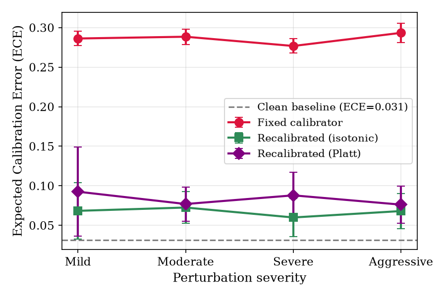
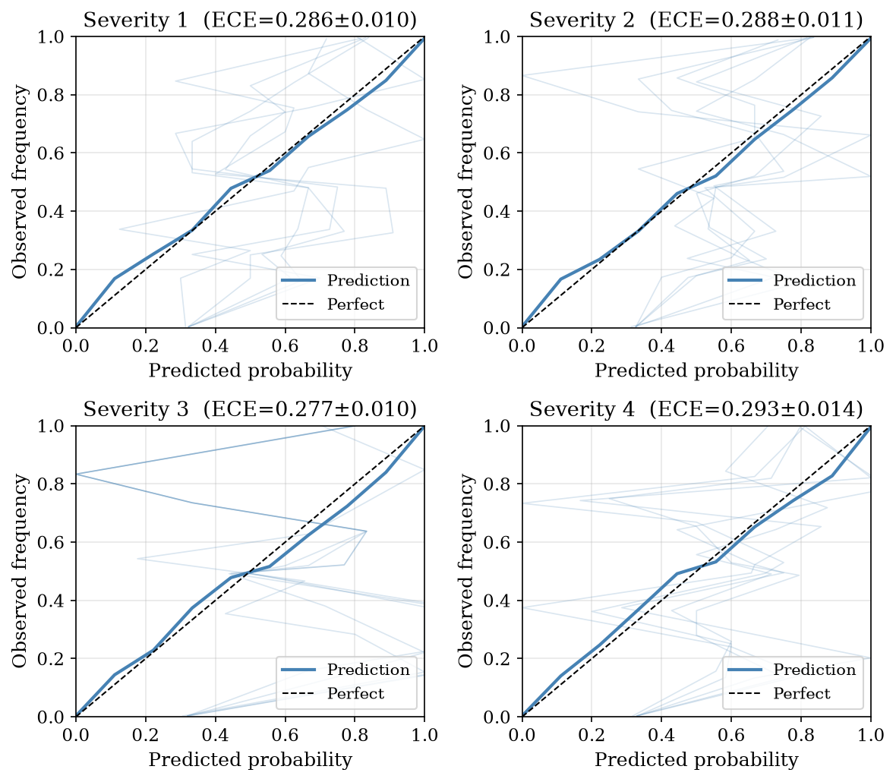
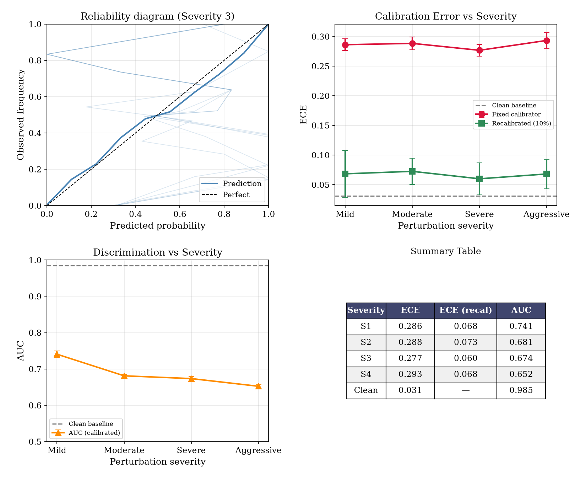

The published hazard model was trained on clean lab data: full cycles, fixed C-rates, controlled temperatures.
Real BESS operation is fundamentally different:
Does calibration survive
when the model meets real data?
NASA discharge curves truncated at random DoD, with Gaussian temperature noise and proportional rest noise applied.
| Level | DoD range | Temp noise | Description |
|---|---|---|---|
| 1 | 75–100% | ±0.5°C | Mild |
| 2 | 55–75% | ±1.0°C | Moderate |
| 3 | 35–55% | ±2.0°C | Severe |
| 4 | 15–35% | ±3.0°C | Aggressive |
5 seeds per level • 20 perturbed datasets • 20,560 records

The primary driver is a shift in the minimum voltage feature under partial cycling.
A 39% increase — the XGBoost model learned thresholds on clean ranges; the isotonic calibrator can't adapt to the shifted distribution.

Isotonic regression fit on 10% of perturbed data, evaluated on held-out 90%:
| Horizon | Clean ECE | Perturbed | Recalibrated |
|---|---|---|---|
| H=10 | 0.010 | 0.272–0.313 | 0.057–0.076 |
| H=20 | 0.031 | 0.277–0.293 | 0.060–0.073 |
| H=30 | 0.013 | 0.288–0.316 | 0.076–0.092 |
| H=50 | 0.023 | 0.331–0.381 | 0.080–0.094 |
Consistent recovery across all severity levels and horizons

Direct deployment under partial cycling pushes ECE > 0.27 — firmly in the unsafe zone
Deploy the frozen XGBoost model as-is
Collect 50–100 operational cycles
from normal BESS operation
Fit a new isotonic regression on these cycles
Deploy the recalibrated model
No base classifier retraining • No original training data needed